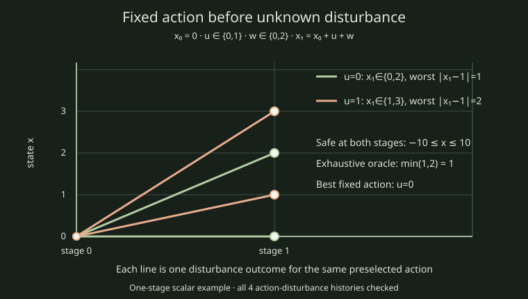

Finite fixed-plan minimax
This report compares two solvers on one bounded, one-stage scalar case. The action is fixed before the disturbance is revealed. The case is x₁=x₀+u+w, x₀=0, u∈{0,1}, w∈{0,2}, safe set −10≤x≤10, and terminal cost |x₁−1|.

The independent oracle enumerates every action and disturbance pair, checks both stage constraints, and evaluates the terminal cost. Its global minimax value is 1.0. All seven measured outcomes from each method passed the oracle checks.
Exploratory timings
Each duration covers the solver call only. One warmup per arm was excluded. Median and min–max range: numerical 9568 ns (7613–10477 ns); validated 9638 ns (8660–10895 ns). Ranges overlap. This tiny fixture supports no performance winner, scalability, or application-scale claim. No separate limiter profile was collected.
| Method | Measured repetition | Status | Solver time (ns) |
|---|
| Numerical | 1 | completed | 9568 |
| Numerical | 2 | completed | 10477 |
| Numerical | 3 | completed | 9010 |
| Numerical | 4 | completed | 9848 |
| Numerical | 5 | completed | 9359 |
| Numerical | 6 | completed | 10476 |
| Numerical | 7 | completed | 7613 |
| Validated | 1 | completed | 10058 |
| Validated | 2 | completed | 9359 |
| Validated | 3 | completed | 10895 |
| Validated | 4 | completed | 8660 |
| Validated | 5 | completed | 10127 |
| Validated | 6 | completed | 9150 |
| Validated | 7 | completed | 9638 |
Reproduce and inspect
Source revision: fce05a69fd62a2397934af53eaf269468990176a. Input manifest SHA-256: f023a2968a067892faa2bbba2c8f264e8e98192c416e3eb52f9ada1d37eb34a5. Build: GNU 16.2.1, Release.